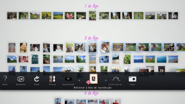

Criar uma lista de reprodução de fotografias seleccionadas
É possível seleccionar fotografias para criar uma lista de reprodução. Com uma lista de reprodução, é possível ver as fotografias seleccionadas pela mesma ordem, a qualquer altura.
Criar uma lista de reprodução
1. |
Em [Área da Biblioteca], seleccione uma fotografia que pretenda adicionar à lista de reprodução, prima o botão  |
||||||||||||
|---|---|---|---|---|---|---|---|---|---|---|---|---|---|
2. |
Utilize o manípulo esquerdo para mudar para uma área vazia em [Área da Lista de Reprodução] e, em seguida, prima o botão |
||||||||||||
3. |
Defina as seguintes opções para a lista de reprodução.
|
 (Adicionar à lista de reprodução).
(Adicionar à lista de reprodução). .
.
 (Música) do ecrã XMB™.
(Música) do ecrã XMB™.Notas
- As definições da lista de reprodução podem ser editadas posteriormente em
 (Editar).
(Editar). - Cada lista de reprodução pode ter as suas próprias definições.
Adicionar fotografias a uma lista de reprodução
1. |
Seleccione as fotografias que pretende adicionar à lista de reprodução, prima o botão |
|---|---|
2. |
Seleccione a lista de reprodução e, em seguida, prima o botão |
Editar definições de uma lista de reprodução
É possível editar as definições de uma lista de reprodução. Seleccione a lista de reprodução que pretende editar, prima o botão  e, em seguida, seleccione (Editar).
e, em seguida, seleccione (Editar).
Mudar uma lista de reprodução
É possível mudar uma lista de reprodução para outra localização. Seleccione a lista de reprodução que pretende mudar, prima o botão e, em seguida, seleccione  (Mover). Pode mudar a lista de reprodução utilizando o manípulo esquerdo.
(Mover). Pode mudar a lista de reprodução utilizando o manípulo esquerdo.
Nota
Pode também mudar uma lista de reprodução sem aceder ao menu. Seleccione a lista de reprodução e, em seguida, prima e mantenha o botão  , enquanto utiliza o manípulo esquerdo para mudar a lista de reprodução.
, enquanto utiliza o manípulo esquerdo para mudar a lista de reprodução.
Eliminar uma lista de reprodução
Para eliminar uma lista de reprodução, seleccione a lista de reprodução que pretende eliminar, prima o botão e, em seguida, seleccione  (Eliminar).
(Eliminar).